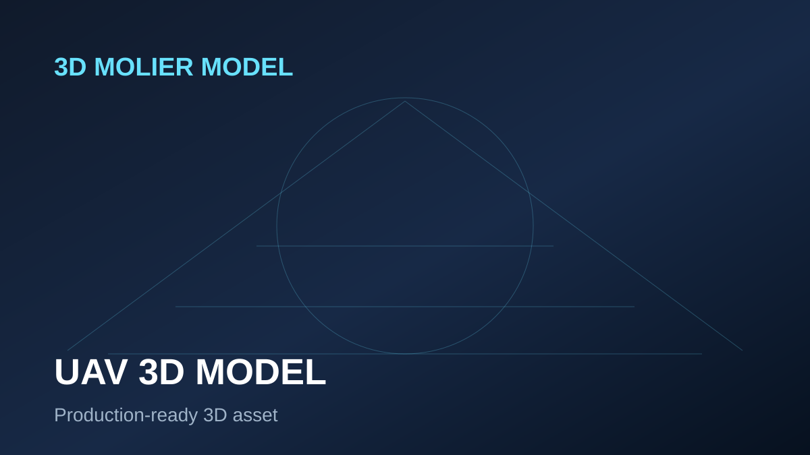

UAV Drone Collection 3D Model
UAV Drone Collection 3D model for UAV drone visualization, defense simulation, surveillance scenes, training animation and technical presentations.
View on TurboSquidSEO landing page
UAV drone 3D models are valuable for defense visualization, surveillance concepts, aerospace animation, training scenarios, robotic aircraft demonstrations and simulation projects. Drone buyers usually look for more than a generic flying object: they need believable proportions, sensor details, landing gear, propellers, payloads, camera modules, clean geometry and formats that can move between DCC software and real-time engines. This page targets rigged UAV drone models, unmanned aircraft, reconnaissance drones, combat drones and aircraft assets that can support technical animation and simulation workflows.
Use UAV assets to explain surveillance, reconnaissance, flight paths, payload systems and defense concepts. Rigged drone models are especially useful for takeoff, flight, propeller movement and camera motion.
Real-time scenes need optimized geometry, readable silhouettes and compatible exchange formats such as FBX, OBJ or glTF. Always check texture size, poly count and material setup before purchase.
Rigging allows an artist to animate propellers, landing gear, camera pods and flight poses faster. When rigging is important, verify the rig in the TurboSquid screenshots and description.
Check 3ds Max, Blender, Maya, Cinema 4D, FBX, OBJ, textures, PBR materials, scale and whether the product supports your software version.
Featured UAV Drone assets
These cards link to TurboSquid in a new tab and include the referral parameter.

UAV Drone Collection 3D model for UAV drone visualization, defense simulation, surveillance scenes, training animation and technical presentations.
View on TurboSquidUAV Drones Collection 3D model for UAV drone visualization, defense simulation, surveillance scenes, training animation and technical presentations.
View on TurboSquidUAV Collection 12 3D model for UAV drone visualization, defense simulation, surveillance scenes, training animation and technical presentations.
View on TurboSquidUAV Drone Rigged Collection 3D model for UAV drone visualization, defense simulation, surveillance scenes, training animation and technical presentations.
View on TurboSquid
Combat Propeller Drone UAV Rigged 3D model for UAV drone visualization, defense simulation, surveillance scenes, training animation and technical presentations.
View on TurboSquidUnmanned Aerial Vehicle MQ-9 Reaper Drone Rigged for Cinema 4D 3D model for UAV drone visualization, defense simulation, surveillance scenes, training animation and technical presentations.
View on TurboSquid
Airport Big Collection 3D model asset for professional visualization, simulation, animation, VFX, technical rendering, and production workflows. Use it as a ready starting point for 3ds Max, Blender, Maya, Cinema 4D, FBX, OBJ, Unreal Engine or Unity scenes when the available formats match your pipeline.
View on TurboSquid
Airbus A320 Generic 3D model asset for professional visualization, simulation, animation, VFX, technical rendering, and production workflows. Use it as a ready starting point for 3ds Max, Blender, Maya, Cinema 4D, FBX, OBJ, Unreal Engine or Unity scenes when the available formats match your pipeline.
View on TurboSquid
Stealth Multirole Fighter F-35 Lightning II 3D model asset for professional visualization, simulation, animation, VFX, technical rendering, and production workflows. Use it as a ready starting point for 3ds Max, Blender, Maya, Cinema 4D, FBX, OBJ, Unreal Engine or Unity scenes when the available formats match your pipeline.
View on TurboSquid
Boeing 737-800 with Interior Delta Air Lines Rigged 3D model asset for professional visualization, simulation, animation, VFX, technical rendering, and production workflows. Use it as a ready starting point for 3ds Max, Blender, Maya, Cinema 4D, FBX, OBJ, Unreal Engine or Unity scenes when the available formats match your pipeline.
View on TurboSquid
Sikorsky UH-60 Black Hawk US Military Utility Helicopter 3D model asset for professional visualization, simulation, animation, VFX, technical rendering, and production workflows. Use it as a ready starting point for 3ds Max, Blender, Maya, Cinema 4D, FBX, OBJ, Unreal Engine or Unity scenes when the available formats match your pipeline.
View on TurboSquid
Narrow Body Airliner Flight 3D model asset for professional visualization, simulation, animation, VFX, technical rendering, and production workflows. Use it as a ready starting point for 3ds Max, Blender, Maya, Cinema 4D, FBX, OBJ, Unreal Engine or Unity scenes when the available formats match your pipeline.
View on TurboSquidFAQ
Yes, if the model has compatible formats, manageable polygon count and enough detail for the intended camera distance.
Use rigged drone products when you need moving propellers, landing gear or camera modules.
Yes. Send references and required technical details to dddmolier@gmail.com.
Send references, target software, required formats and intended use. We can prepare similar assets for visualization, simulation, animation and rendering workflows.